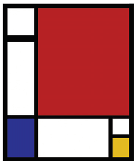
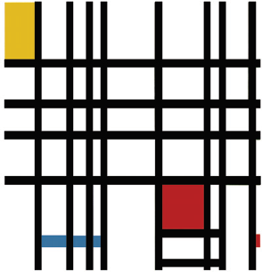

A professora Inês, interessada em integrar matemática e artes plásticas, propôs aos seus alunos uma pesquisa da obra do
artista plástico Piet Mondrian (1872-1944), que consistiu na observação dos quadros reproduzidos abaixo.

Composição com Vermelho, Azul e Amarelo - 1930

Composição com Amarelo, Azul e Vermelho - 1939
Disponível em: http://www.artcyclopedia.com/artists/mondrian_piet.html
A qual objetivo da educação matemática para o ensino fundamental, presente nos PCN, atende a proposta da professora, de
observação dos quadros de Mondrian?
-
Identificar formas geométricas e reproduzi-las segundo categorias artísticas miméticas, a fim de apurar o gosto estético.
-
Estabelecer conexões entre temas matemáticos de diferentes campos e entre esses temas e conhecimentos de outras
áreas curriculares.
-
Descrever resultados com precisão e argumentar sobre suas conjecturas, estabelecendo relações entre matemática e
linguagem oral.
-
Resolver situações-problema para validar estratégias e resultados, identificando os ângulos obtuso, agudo e reto entre as
formas geométricas.
-
Apurar a percepção da forma e estimular a sua criação, por meio da cooperação, tendo em vista a solução de problemas
numéricos propostos.